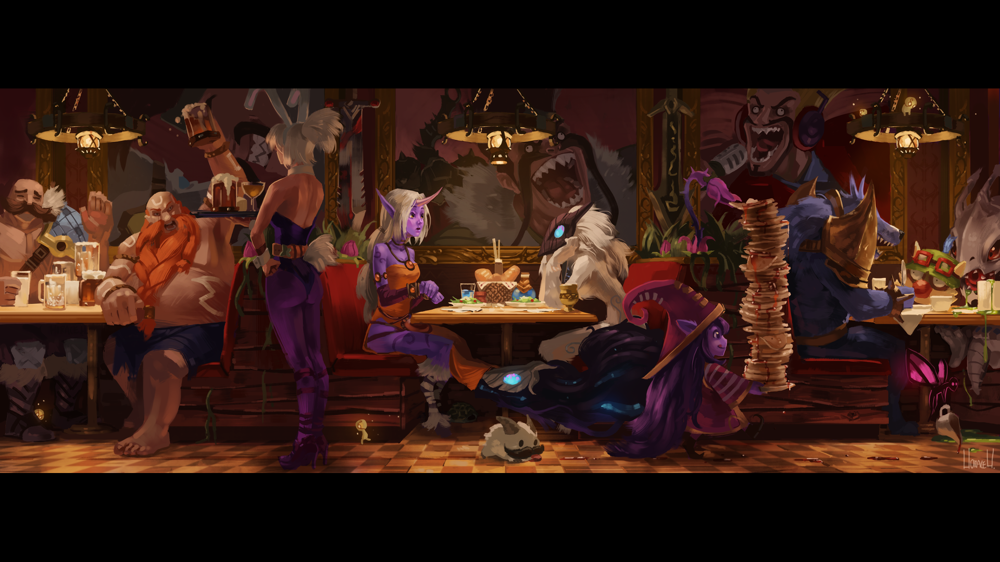
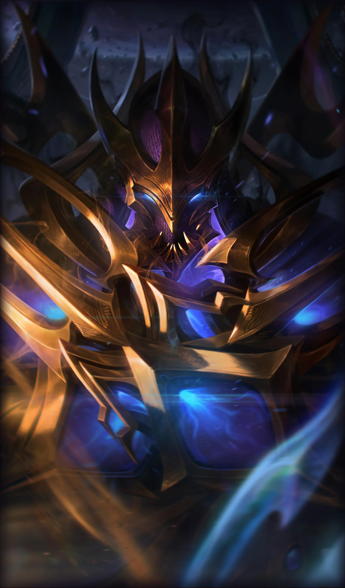
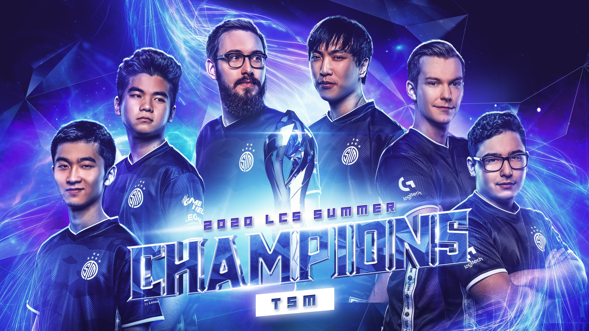

Boas-vindas a bordo invocador!
- Welcome to League of Legends -
O que é League of Legends?

League of Legends é um jogo gratuito de MOBA distribuído pela Riot
Games. Ele é disponibilizado para PC e foi inspirado no modo Defense
of the Ancients de Warcraft III. Nele temos duas equipes de 5 campeões
cada disputando uma vitória na batalha dentro do mapa do jogo.
É um mundo completamente fantasioso com muita magia e disputas. Os personagens dele são guerreiros variados, entre eles você pode escolher por:
- Assassinos
- Lutadores
- Magos
- Atiradores
- Suportes
- Tanques
Zed: O Mestre das Sombras!
Absolutamente impiedoso e implacável, Zed é o líder da Ordem das Sombras; uma organização criada com a intenção de militarizar as tradições marciais e mágicas de Ionia para expulsar os invasores noxianos. Durante a guerra, o desespero o levou a libertar a forma secreta das sombras, uma magia espiritual malévola tão perigosa e manipuladora quanto poderosa. Zed dominou todas essas técnicas proibidas para destruir qualquer coisa que considerasse uma ameaça a sua nação, ou a sua nova ordem.
Meu main (Principal Campeão) e um dos campeões que mais jogo ultimamente e consigo "carregar" os joguinhos e meus amigos mochilas haha, sempre dando INSTA KILL Zed é um Assassino impiedoso e com esse campeão eu posso dizer que CARREGO a partida!
World Championship
O Campeonato Mundial de League of Legends, também conhecido como Mundial, é o ápice da competição de Esports do LoL, na qual as melhores equipes de oito regiões competem pelo título de campeã mundial. Realizado após o término da temporada regular em uma região anfitriã diferente todo ano, as equipes qualificadas de ligas profissionais do mundo todo participam do torneio. Neste ano, a Europa será a anfitriã do evento.
Principais Objetivos no League Of Legends
Os Dragões do LoL são os objetivos mais valiosos do jogo e muitas vezes ditam como determinada equipe precisa jogar para vencer. Chamados de Dragões Elementais, eles dão efeitos exclusivos ao time que os eliminar, além de também causarem mudanças no mapa que influenciam as estratégias de cada partida, os principais dragões são ( Dragão Infernal, Dragão da Montanha, Dragão das Nuvens, Dragão do Oceano).
Entendendo as lanes do LoL
Nomes das rotas:
As rotas do LoL, também chamadas de lanes, são: Top Lane (Topo), Jungle (Caçador), Mid Lane (Meio), Bot LaneBot e Support (Suporte). O bot também é chamado de AD Carry (Atirador).